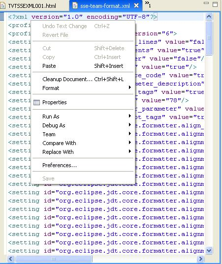
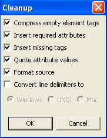
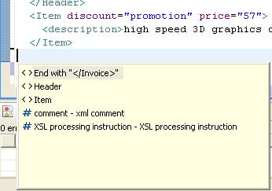
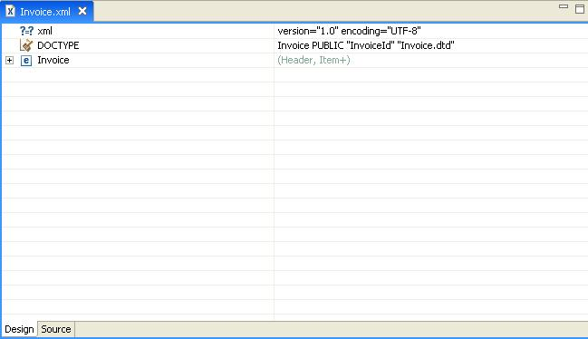

Here's some information from development regarding what they do/do not translate for Hover Help (and for Tag Help for content assist proposals): For XML, we get the hover help from either the DTD or XSD file, if one is referenced in the XML file (e.g., the Invoice.xml file references the Invoice.dtd file in its DOCTYPE statement). The bold labels in front of the hover help ("Element:", "Content Model:", "Data Type:", etc) are translated. We also pull in the description for the element from the referenced DTD/XSD file, if any. This is usually in the language the DTD/XSD file is written in and we don't translate them. However, we have seen some DTDs with a long description for the element, one paragraph in French, another paragraph in English. We will just pull in the whole description.
- Undo/Undo Text Change
- Cut
- Paste
- Cleanup Document...
- Format (and its submenu)
- Properties


- Undo Text Change
- Redo Text Change
- Expand Selection To (and submenu)
- Show Tooltip Description
- Content Assist
- Quick Fix



- Remove
- Edit Processing Instruction...
- Add Before
- Add After
- Edit Doctype...
- Add Child
- Add Attribute


